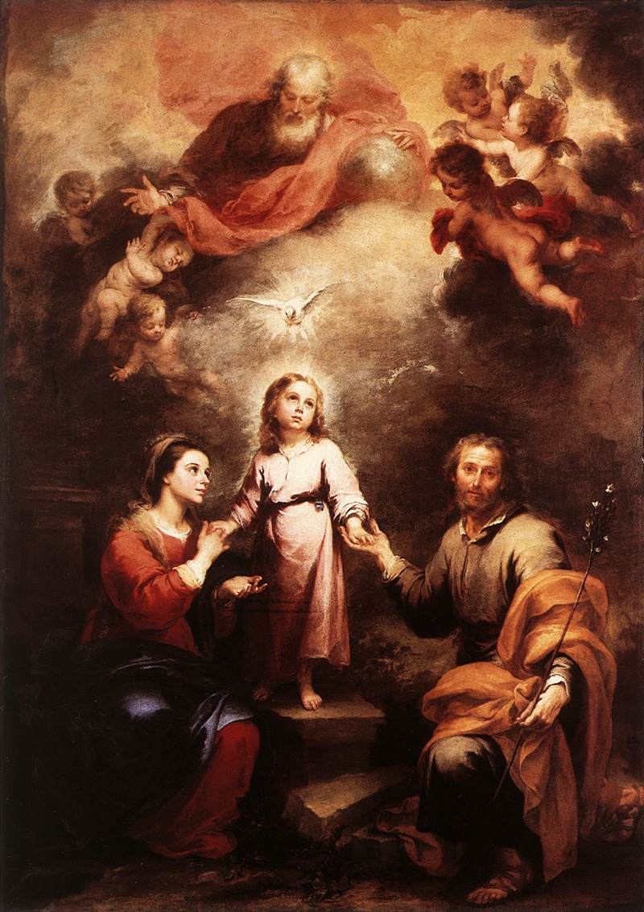

AT THE END of three weeks, we should go to confession and Holy Communion with the intention of giving ourselves to Jesus Christ in the quality of slaves of love, by the hands of Mary. After Communion, we should recite the consecration prayer—we ought to write it, or have it written, and sign it the same day the consecration is made. It would be well that on this day, we should pay some tribute to Jesus Christ and our Blessed Lady, either as a penance for our past unfaithfulness to the vows of Baptism, or as a testimony of dependence on the dominion of Jesus and Mary. This tribute should be one in accordance with your fervor, such as a fast, a mortification or an alms, or a candle. If but a pin is given in homage, and given with a good heart, it will be enough for Jesus, Who loves only the good will. Once a year at least, and on the same day, we should renew this consecration, observing the same practices during the three weeks.
You should aim to do the consecration on a Marian Feast day, like the Immaculate Conception. Here is a list of prominent Marian Feast days:
January 1—Mary, Mother of God
January 8—Our Lady of Prompt Succor
February 2—Purification of the Virgin
February 11—Our Lady of Lourdes
March 25—Annunciation by Archangel Gabriel (it may be either moved to the day before Palm Sunday should this date be on Holy Week; or to the Monday after the second Sunday of Easter if this date falls on either Friday or Saturday of Holy Week or during Easter Week)
April 26—Our Lady of Good Counsel
May 1—Queen of Heaven
May 13—Our Lady of Fatima
May 24—Mary Help of Christians
May 31—Mary, Mediatrix of all Graces
May 31—Visitation of the Blessed Virgin Mary
June 27—Our Lady of Perpetual Help
July 16—Our Lady of Mount Carmel
August 2—Our Lady of Angels
August 5—Dedication of the Basilica of Saint Mary Major
August 15—Assumption into Heaven
August 21—Our Lady of Knock
August 22—Queenship of Mary
August 22—Black Madonna of Częstochowa
September 8—Nativity of the Blessed Virgin Mary
September 12—The Most Holy Name of the Blessed Virgin Mary
September 15—Our Lady of Sorrows
September 19—Our Lady of La Salette
September 24—Our Lady of Walsingham
October 7—Most Holy Rosary
November 16—Our Lady of Mercy
November 21—Presentation of Mary
December 8—Immaculate Conception
December 12—Our Lady of Guadalupe
1 day after Ascension of Jesus—Our Lady of Apostles
1 day after Pentecost—Our Lady of Holy Church
9 days after Corpus Christi—Immaculate Heart of Mary
O ETERNAL and Incarnate Wisdom! O sweetest and most Adorable Jesus! True God and True Man, only Son of the Eternal Father, and of Mary always Virgin! I adore Thee profoundly in the bosom and splendours of Thy Father during eternity; and I adore Thee also in the Virginal bosom of Mary, Thy most worthy Mother, in the time of Thine Incarnation.
I give Thee thanks for that Thou hast annihilated Thyself, in taking the form of a slave, in order to rescue me from the cruel slavery of the devil. I praise and glorify Thee for that Thou hast been pleased to submit Thyself to Mary, Thy holy Mother, in all things, in order to make me Thy faithful slave through her. But, alas! ungrateful and faithless as I have been, I have not kept the promises which I made so solemnly to Thee in my Baptism; I have not fulfilled my obligations; I do not deserve to be called Thy son, nor yet Thy slave; and as there is nothing in me which does not merit Thine anger and Thy repulse, I dare no more come by myself before Thy Most Holy and August Majesty. It is on this account that I have recourse to the intercession of Thy most holy Mother, whom Thou hast given me for a mediatrix with Thee. It is by her means that I hope to obtain of Thee contrition, and the pardon of my sins, the acquisition and the preservation of wisdom. I salute thee, then, O immaculate Mary, living tabernacle of the Divinity, where the Eternal Wisdom willed to be hidden, and to be adored by Angels and by men. I hail thee, O Queen of heaven and earth, to whose empire everything is subject which is under God.
I salute thee, O sure refuge of sinners, whose mercy fails to no one. Hear the desires which I have of the Divine Wisdom; and for that end receive the vows and offerings which my lowness presents to thee. I, [Name], a faithless sinner—I renew and ratify today in thy hands the vows of my Baptism; I renounce for ever Satan, his pomps and works; and I give myself entirely to Jesus Christ, the Incarnate Wisdom, to carry my cross after Him all the days of my life, and to be more faithful to Him than I have ever been before.
In the presence of all the heavenly court I choose thee this day for my Mother and Mistress. I deliver and consecrate to thee, as thy slave, my body and soul, my goods, both interior and exterior, and even the value of all my good actions, past, present, and future; leaving to you the entire and full right of disposing of me, and all that belongs to me, without exception, according to thy good pleasure, to the greatest glory of God, in time and in eternity.
Receive, O benignant Virgin, this little offering of my slavery, in the honour of, and in union with, that subjection which the Eternal Wisdom deigned to have to thy Maternity, in homage to the power which both of you have over this little worm and miserable sinner, and in thanksgiving for the privileges with which the Holy Trinity hath favoured thee. I protest that I wish henceforth, as thy true slave, to seek thy honour and to obey thee in all things.
O admirable Mother, present me to thy dear Son as His eternal slave, so that as He hath redeemed me by thee, by thee He may receive me. O Mother of mercy, get me the grace to obtain the true Wisdom of God; and for that end put me in the number of those whom thou lovest, whom thou teachest, whom thou conductest, and whom thou nourishest and protectest, as thy children and thy slaves.
O faithful Virgin, make me in all things so perfect a disciple, imitator, and slave of the Incarnate Wisdom, Jesus Christ thy Son, that I may attain, by thy intercession, and by thy example, to the fulness of His age on earth, and of His glory in the heavens. Amen.
Qui potest capere, capiat.
Let him take who can take.
Quis sapiens, et intelliget haec?
Who is wise, and he shall understand these things?
